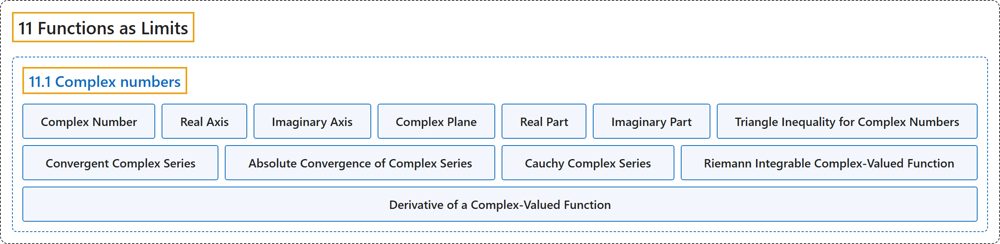

11.1 Complex numbers
Classification

Glossary
| Term | Definition | 中文翻译 | Source |
|---|---|---|---|
| 11.1 Complex numbers 复数 |
(No definition) | （无定义） | Lebl, 2026, section 11.1 |
| Complex Number 复数 |
"A complex number is just a pair \((x,y) \in \mathbb{R}^2\) on which we define multiplication. We call the set the complex numbers and denote it by \(\mathbb{C}\)." | 复数就是在其上定义了乘法的数对 \((x,y) \in \mathbb{R}^2\)。这个集合称为复数集，记作 \(\mathbb{C}\)。 | Lebl, 2026, section 11.1 |
| Real Axis 实轴 |
"We identify \(x \in \mathbb{R}\) with \((x,0) \in \mathbb{C}\). The \(x\)-axis is then called the real axis and the \(y\)-axis is called the imaginary axis." | 把 \(x \in \mathbb{R}\) 等同于 \((x,0) \in \mathbb{C}\)。于是 \(x\) 轴称为实轴，\(y\) 轴称为虚轴。 | Lebl, 2026, section 11.1 |
| Imaginary Axis 虚轴 |
"The \(x\)-axis is then called the real axis and the \(y\)-axis is called the imaginary axis." | 于是 \(x\) 轴称为实轴，\(y\) 轴称为虚轴。 | Lebl, 2026, section 11.1 |
| Complex Plane 复平面 |
"As \(\mathbb{C}\) is just the plane, we also call the set \(\mathbb{C}\) the complex plane." | 由于 \(\mathbb{C}\) 就是平面，也把集合 \(\mathbb{C}\) 称为复平面。 | Lebl, 2026, section 11.1 |
| Real Part 实部 |
"Suppose \(z= x+iy\). We call \(x\) the real part of \(z\), and we call \(y\) the imaginary part of \(z\). We write \(\operatorname{Re}\, z := x , \qquad \operatorname{Im}\, z := y .\)" | 设 \(z= x+iy\)。称 \(x\) 为 \(z\) 的实部，称 \(y\) 为 \(z\) 的虚部，记作 \(\operatorname{Re}\, z := x , \qquad \operatorname{Im}\, z := y .\) | Lebl, 2026, Definition 11.1.1 |
| Imaginary Part 虚部 |
"We call \(x\) the real part of \(z\), and we call \(y\) the imaginary part of \(z\)." | 称 \(x\) 为 \(z\) 的实部，称 \(y\) 为 \(z\) 的虚部。 | Lebl, 2026, Definition 11.1.1 |
| Triangle Inequality for Complex Numbers 复数的三角不等式 |
"As \(\lvert z \rvert\) is the euclidean norm on \(\mathbb{R}^2\), we have the triangle inequality of both flavors: \(\lvert z+w \rvert \leq \lvert z \rvert+\lvert w \rvert \qquad \text{and} \qquad \big\lvert \lvert z \rvert-\lvert w \rvert \big\rvert \leq \lvert z-w \rvert\)." | 由于 \(\lvert z \rvert\) 是 \(\mathbb{R}^2\) 上的欧几里得范数，两种三角不等式都成立：\(\lvert z+w \rvert \leq \lvert z \rvert+\lvert w \rvert \qquad \text{and} \qquad \big\lvert \lvert z \rvert-\lvert w \rvert \big\rvert \leq \lvert z-w \rvert\)。 | Lebl, 2026, section 11.1 |
| Convergent Complex Series 收敛的复级数 |
"Let \(\{ z_n \}_{n=1}^\infty\) be a sequence of complex numbers. The series \(\sum_{n=1}^\infty z_n\) converges if the sequence of partial sums converges, that is, if \(\lim_{k\to\infty} \sum_{n=1}^k z_n \qquad \text{exists.}\)" | 设 \(\{ z_n \}_{n=1}^\infty\) 是复数序列。若部分和序列收敛，即 \(\lim_{k\to\infty} \sum_{n=1}^k z_n \qquad \text{exists.}\)，则级数 \(\sum_{n=1}^\infty z_n\) 收敛。 | Lebl, 2026, section 11.1 |
| Absolute Convergence of Complex Series 复级数的绝对收敛 |
"A series converges absolutely if \(\sum_{n=1}^\infty \lvert z_n \rvert\) converges." | 若 \(\sum_{n=1}^\infty \lvert z_n \rvert\) 收敛，则称级数绝对收敛。 | Lebl, 2026, section 11.1 |
| Cauchy Complex Series 柯西复级数 |
"We say a series is Cauchy if the sequence of partial sums is Cauchy." | 若部分和序列是柯西序列，则称级数是柯西的。 | Lebl, 2026, section 11.1 |
| Riemann Integrable Complex-Valued Function 黎曼可积的复值函数 |
"Suppose we wish to integrate \(f \colon [a,b] \to \mathbb{C}\). We write \(f = u+i\,v\) for real-valued \(u\) and \(v\). We say that \(f\) is Riemann integrable if \(u\) and \(v\) are Riemann integrable, and in this case we define \(\int_a^b f := \int_a^b u + i \int_a^b v\)." | 要对 \(f \colon [a,b] \to \mathbb{C}\) 积分，写 \(f = u+i\,v\)，其中 \(u\)、\(v\) 是实值函数。若 \(u\) 与 \(v\) 黎曼可积，则称 \(f\) 黎曼可积，并定义 \(\int_a^b f := \int_a^b u + i \int_a^b v\)。 | Lebl, 2026, section 11.1 |
| Derivative of a Complex-Valued Function 复值函数的导数 |
"Similarly when we differentiate, write \(f \colon [a,b] \to \mathbb{C}\) as \(f = u+i\,v\). Thinking of \(\mathbb{C}\) as \(\mathbb{R}^2\), we say that \(f\) is differentiable if \(u\) and \(v\) are differentiable. In other words, we write the derivative as \(f'(t) := u'(t) + i \, v'(t)\)." | 类似地，求导时把 \(f \colon [a,b] \to \mathbb{C}\) 写成 \(f = u+i\,v\)。把 \(\mathbb{C}\) 看作 \(\mathbb{R}^2\)，若 \(u\) 与 \(v\) 可微，则称 \(f\) 可微。换言之，把导数写成 \(f'(t) := u'(t) + i \, v'(t)\)。 | Lebl, 2026, section 11.1 |
References
Lebl, J. (2026). Basic analysis I & II: Introduction to real analysis (May 22, 2026 edition). Retrieved October 29, 2026, from https://www.jirka.org/ra/html/